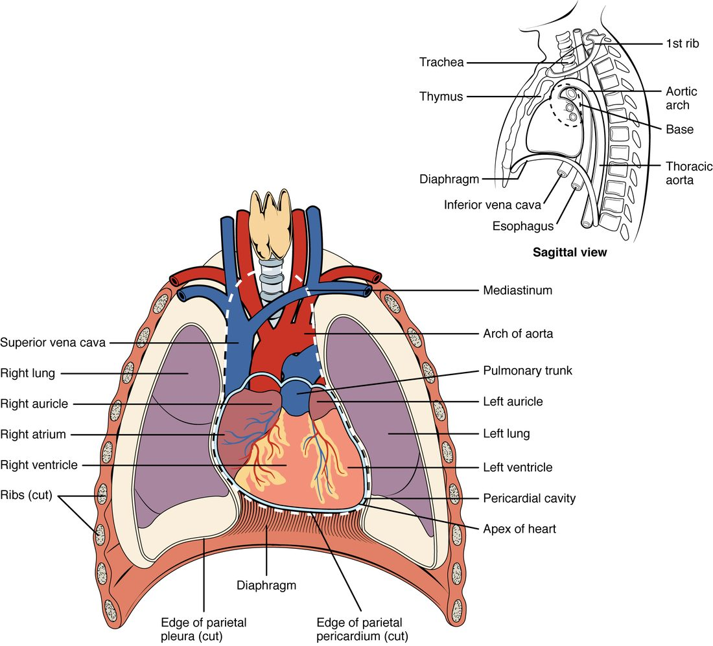

Heart anatomy starts with four questions: where your heart sits in the chest, what wraps around it, what its wall is made of, and how it is divided inside. This page covers the heart's location, the layers of the pericardium, the three layers of the heart wall, the four chambers and the great vessels that attach to them. It ends with cardiac tamponade, an emergency that only makes sense once you know those layers.
Where your heart sits
Press your fingers into the space between your ribs just below your left nipple, and you may feel a tap with each beat. That tap is the tip of your heart hitting the inside of your chest wall. It tells you two things right away: your heart is closer to the front of your chest than the back, and it points to the left.
Your heart is a hollow muscular organ about the size of your closed fist. In an adult it weighs roughly 250 to 350 grams. It sits in the mediastinum, the central compartment of the thoracic cavity between the two pleural cavities (Figure 1). That puts it:
- between your two lungs, on either side;
- posterior to your sternum, in front;
- anterior to your esophagus and vertebral column, behind;
- on the dome of your diaphragm, below.
The heart does not sit straight. It is tilted so that about two thirds of its mass lies to the left of the body's midline. It is also turned slightly, so its right side faces more toward the front.

Apex and base
Your heart is shaped roughly like a blunt cone lying on its side. Its two ends have names that trip up many students, because they run opposite to what you might expect.
- The apex of the heart (apex = tip) is the pointed lower end. It points inferiorly, anteriorly and to the left. In most adults it lies at the fifth intercostal space (inter- = between, cost/o = rib), in line with the middle of the left clavicle. That is where you feel the tap.
- The base of the heart is the broad upper and back end. It faces superiorly, posteriorly and to the right, toward your right shoulder. The large blood vessels that carry blood into and out of the heart attach here.
So the base is at the top and the apex is at the bottom. Think of an ice cream cone held the usual way: the wide opening at the top is the base, and the point at the bottom is the apex.
The pericardium: a sac with two parts
Imagine pushing your fist into a partly inflated balloon. The balloon folds around your fist in two layers: one pressed against your skin, one facing outward, with a thin film of air between them. Now put that balloon inside a stiff paper bag. That is the plan of the pericardium.
The pericardium (peri- = around, cardi/o = heart) is the covering that surrounds your heart. It has two parts that are built very differently.
Fibrous pericardium
The fibrous pericardium is the tough outer bag, the paper bag in the picture. It is made of dense connective tissue, mostly thick collagen fibers running in many directions. It is anchored below to the diaphragm and above to the connective tissue around the large vessels at the base of the heart. Collagen resists being pulled, so this layer does two things. It holds your heart in place in the mediastinum. And it resists stretching, which limits how far the heart can expand. That last point matters for cardiac tamponade, later on this page.
Serous pericardium
The serous pericardium (ser/o = watery fluid) is the thin inner part, the balloon in the picture. It is a serous membrane: a single layer of simple squamous epithelium, called mesothelium, on a thin layer of connective tissue. Like the balloon, it forms two layers that are continuous with each other where the large vessels enter and leave at the base.
- The parietal pericardium (pariet- = wall) is the outer layer. It lines the inside of the fibrous pericardium and is fused to it.
- The visceral pericardium (viscer- = internal organ) is the inner layer. It sticks tightly to the surface of the heart itself.
The pericardial cavity
Between the parietal and visceral layers lies the pericardial cavity. It is not an open space. It holds only a thin film of serous fluid, usually about 15 to 50 mL. The mesothelium secretes this fluid. It lets the two layers slide over each other with little friction as your heart beats about 100,000 times a day.
The pericardial sac is the name for the fibrous pericardium together with the parietal layer fused to its inside. It is the part you would cut through to reach the heart in surgery. Figure 2 shows every layer in order.
| Fibrous pericardium | Serous pericardium | |
|---|---|---|
| Position | Outermost; the tough bag | Inside the fibrous layer; folded into two layers |
| Tissue | Dense connective tissue (collagen) | Mesothelium (simple squamous epithelium) on thin connective tissue |
| Layers | One | Two: parietal (outer) and visceral (inner) |
| Stretch | Resists stretch, especially sudden stretch | Thin and flexible |
| Main job | Anchors the heart and limits how far it can expand | Secretes serous fluid, so the layers slide with little friction |
The three layers of the heart wall
Now move inward, into the wall of the heart itself. It has three layers. From outside to inside they are the epicardium, the myocardium and the endocardium.

Epicardium
The epicardium (epi- = upon) is the outermost layer of the heart wall. It is the visceral pericardium under another name. The same sheet of tissue gets two names because it belongs to two structures: it is the inner layer of the serous pericardium, and it is the outer layer of the heart wall. Beneath its mesothelium lies connective tissue with fat. The heart's own surface blood vessels and nerves run through this fat.
Myocardium
The myocardium (my/o = muscle) is the middle layer and by far the thickest. It is cardiac muscle tissue: striated, branching muscle fibers joined end to end by intercalated discs. A network of collagen and elastic fibers holds the muscle together and carries its blood vessels. The muscle fibers wrap around the heart in spiral and figure-eight bundles. When they shorten, they squeeze and twist the heart, a bit like wringing out a towel. The myocardium is the layer that does the pumping.
Endocardium
The endocardium (endo- = within) is the innermost layer. It lines every space inside the heart and covers the flaps that control flow through it. It is endothelium, a simple squamous epithelium, on a thin layer of connective tissue. It is continuous with the endothelium lining your blood vessels, so blood touches one smooth, unbroken lining all the way around your body.
| Epicardium | Myocardium | Endocardium | |
|---|---|---|---|
| Position | Outer layer of the wall | Middle layer | Inner layer |
| Main tissue | Mesothelium on connective tissue and fat | Cardiac muscle tissue | Endothelium on thin connective tissue |
| Thickness | Thin | Thickest by far | Thin |
| Also called | Visceral pericardium | None | None |
| What it does | Covers the heart; carries surface vessels and nerves | Contracts and pumps blood | Gives blood a smooth lining to flow over |
Four chambers: two receiving, two pumping
Picture a house with two floors and a solid wall down the middle. Each side has an entry hall upstairs and a big room downstairs. Blood always comes in upstairs and leaves from downstairs. That is the layout of the four chambers of the heart, the hollow spaces inside it.
- An atrium (atri- = entrance hall; plural atria) is an upper, receiving chamber. Veins bring blood into it, and it passes that blood down to the ventricle below.
- A ventricle (ventricul- = little belly) is a lower, pumping chamber. It receives blood from the atrium above and pushes it out into a large artery.
So you have a right atrium above a right ventricle, and a left atrium above a left ventricle. "Right" and "left" are always the patient's right and left. When you look at a front-view drawing, the patient's right side is on your left.
In a healthy adult heart, blood on the right side never mixes with blood on the left side. Each side is a separate pump, and each works as a pair: atrium receives, ventricle pumps.
| Chamber | Receives blood from | Sends blood to |
|---|---|---|
| Right atrium | The body, through the superior and inferior venae cavae | The right ventricle, just below it |
| Right ventricle | The right atrium | The lungs, through the pulmonary trunk |
| Left atrium | The lungs, through the pulmonary veins | The left ventricle, just below it |
| Left ventricle | The left atrium | The rest of the body, through the aorta |
The chambers from outside
Look again at the heart in Figure 1. Because the heart is turned, the chambers you see from the front are not the ones you might expect.
- Most of the front surface is the right ventricle.
- The left ventricle forms the left edge of the heart and the apex.
- The right atrium forms the right edge.
- The left atrium lies at the back of the base, so a front view shows only its small pouch.
Each atrium has a wrinkled, ear-shaped pouch on its front called an auricle (auricul- = little ear). The right auricle sits beside the root of the aorta; the left auricle peeks out beside the pulmonary trunk. An auricle adds a little extra room to its atrium. Do not confuse the two words: an auricle is only a pouch of an atrium, not a chamber of its own.
Grooves on the surface show where the chambers meet inside. Each groove is filled with fat and carries the heart's own surface blood vessels.
- The coronary sulcus (coron- = crown; sulcus = groove) runs all the way around the heart like a crown. It marks the boundary between the atria above and the ventricles below.
- The anterior interventricular sulcus runs down the front of the heart toward the apex. It marks where the wall between the two ventricles meets the surface.
- The posterior interventricular sulcus does the same on the back of the heart.
The chambers from inside
The atria have thin walls: they only push blood a short way down into the relaxed ventricles below them. The ventricles have much thicker myocardium, because they push blood out into the great arteries. The next topic opens the heart up and compares the walls in detail. Two features of the inner walls are worth knowing now.
- Pectinate muscles (pectin- = comb) are parallel ridges of myocardium, like the teeth of a comb, on the inner wall of the auricles and the front wall of the right atrium. The rest of each atrium's inner wall is smooth.
- Trabeculae carneae (trabecula = little beam; carne- = flesh) are irregular ridges and bridges of myocardium on the inner walls of both ventricles.
The great vessels
The largest blood vessels in your body all attach at the base of the heart. Together they are called the great vessels. The easiest way to learn them is by the chamber each one joins, and by whether it brings blood in or carries it out.
| Vessel | Chamber | Direction | Blood it carries |
|---|---|---|---|
| Superior vena cava | Right atrium | Into the heart, from the head, neck, arms and upper chest | Low in oxygen: it has passed through the body's tissues |
| Inferior vena cava | Right atrium | Into the heart, from everything below the diaphragm | Low in oxygen: it has passed through the body's tissues |
| Pulmonary trunk, splitting into the right and left pulmonary arteries | Right ventricle | Out of the heart, to the lungs | Low in oxygen: it is on its way to pick oxygen up |
| Pulmonary veins (usually four, two from each lung) | Left atrium | Into the heart, from the lungs | Rich in oxygen: it has just picked oxygen up in the lungs |
| Aorta (ascending aorta, then the aortic arch) | Left ventricle | Out of the heart, to the rest of the body | Rich in oxygen: it is on its way to the tissues |
The superior vena cava (vena = vein, cava = hollow) enters the right atrium from above, and the inferior vena cava enters it from below. They are the two largest veins in your body. In Figure 1 the superior vena cava is the blue vessel coming down into the heart's right side (on the left of the drawing). The inferior vena cava shows in the small side view, where it passes up through the diaphragm.
The pulmonary trunk (pulmon- = lung) is a short, wide artery that leaves the top of the right ventricle, at the front of the base. After a few centimeters it splits into the right and left pulmonary arteries, one to each lung. The pulmonary veins bring blood back from the lungs into the back of the left atrium, so a front view hides them.
The aorta is the largest artery in your body. It leaves the left ventricle and rises a short way as the ascending aorta, partly hidden behind the pulmonary trunk. It then curves up, back and to the left over the pulmonary trunk as the aortic arch (also labeled the arch of the aorta). From there the aorta runs down behind the heart toward the abdomen; its lower parts and branches come with the body's main arteries, later in this chapter.
Arteries and veins are named by direction
Look at the last column of the table. Most arteries carry blood rich in oxygen, and most veins carry blood low in oxygen. The pulmonary vessels do the opposite: the pulmonary arteries carry blood low in oxygen, and the pulmonary veins carry blood rich in oxygen. They are not misnamed. An artery carries blood away from the heart, and a vein carries blood toward it. The name depends only on direction, not on how much oxygen the blood holds. The next topic follows the blood through all four chambers in order and shows where it gains and loses its oxygen.
Cardiac tamponade: when the sac fills
A 24-year-old man arrives with a stab wound just left of his sternum. His blood pressure is falling, the veins in his neck are bulging, and through a stethoscope his heartbeat sounds faint and far away. The knife did not need to hit a large vessel. It only needed to let blood leak into his pericardial cavity.
Cardiac tamponade (tampon = plug, French) is compression of the heart by fluid or blood collecting in the pericardial cavity. Here is the chain of events:
- Blood or fluid collects in the pericardial cavity faster than it drains.
- The fibrous pericardium cannot stretch quickly, so the extra volume raises the pressure inside the sac.
- That pressure presses on the outside of the heart. The chambers with the thinnest walls, which fill at low pressure (the atria and the right ventricle), collapse first.
- Between beats, blood can no longer flow fully into the compressed heart, so each beat pumps out less blood.
- Less blood pumped out lowers blood pressure. Blood returning to the heart backs up in the large veins, so the neck veins bulge. The fluid layer around the heart muffles the sound of the heartbeat.
Those last three signs (low blood pressure, bulging neck veins and muffled heart tones) are the classic trio for tamponade, often called Beck's triad. Not every patient shows all three.
The treatment follows from the mechanism. Removing even a small amount of fluid lowers the pressure in the sac, and the heart can fill again. A clinician drains the fluid with a needle passed into the pericardial cavity (pericardiocentesis: -centesis = puncture), or surgically.
Speed matters more than volume
Here is the surprising part. About 150 mL of blood collecting over a few minutes can cause tamponade. Yet fluid that builds up slowly over weeks, for example from inflammation or cancer, can reach a liter or more before it causes trouble. The difference is the fibrous pericardium. Its collagen cannot stretch fast, but given weeks, the tissue remodels and the sac enlarges. So the pressure inside the sac depends on how fast fluid arrives, not just how much.
Summary
Your heart sits in the mediastinum, between the lungs, behind the sternum and on the diaphragm, with about two thirds of it left of the midline. Its base is the broad upper, back end where the great vessels attach; its apex is the lower tip, at the fifth intercostal space on the left. The pericardium has a tough fibrous outer bag and a thin serous membrane folded into parietal and visceral layers, with a film of fluid in the pericardial cavity between them. The heart wall has three layers: epicardium (the visceral pericardium), myocardium (cardiac muscle, the pumping layer) and endocardium (endothelium). Inside are four chambers: two atria that receive blood (each with an ear-shaped auricle) and two ventricles that pump it out. The venae cavae enter the right atrium, the pulmonary trunk leaves the right ventricle and splits into the pulmonary arteries, the pulmonary veins enter the left atrium, and the aorta leaves the left ventricle as the ascending aorta and then the aortic arch. The venae cavae and pulmonary arteries carry blood low in oxygen; the pulmonary veins and aorta carry blood rich in oxygen. In cardiac tamponade, fluid in the pericardial cavity cannot push the fibrous pericardium outward fast enough, so it squeezes the heart and stops it from filling.